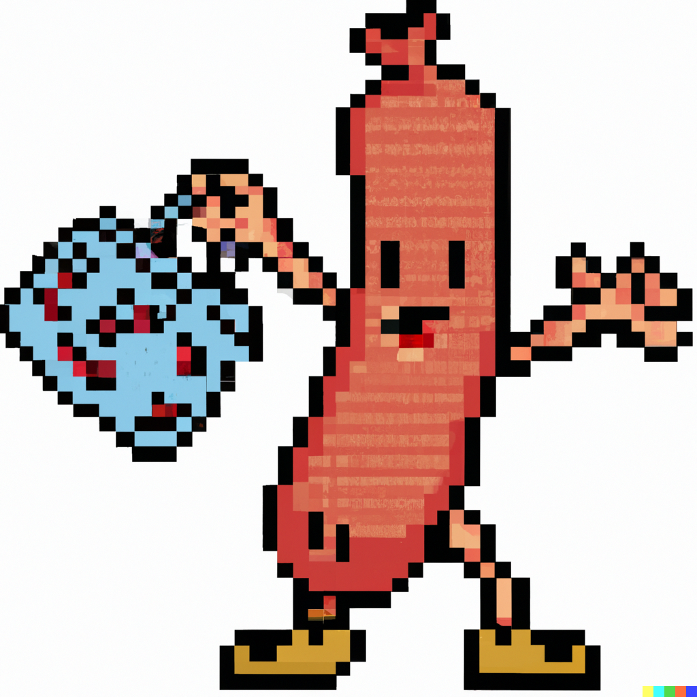

I'm Jay, a passionate student at UCSD (University of California, San Diego) with a deep love for computer science. My journey in the world of CS has been an exhilarating adventure. From coding projects that defy gravity to creating software that simplifies everyday life, I'm constantly driven by the endless possibilities of technology.
Featured Projects

"Sausage Stealer" is a whimsical video game where players control a daring sausage that holds a sausage store hostage, blending humor and suspense in a culinary-themed adventure. Gamers navigate through comical interactions, tackling puzzles and challenges as they follow the sausage's journey of culinary capers and unexpected bonds.
Innis.com is a captivating digital realm, an enchanting fusion of art, science, and imagination, where users embark on a virtual odyssey through surreal landscapes, uncovering hidden wonders and unraveling mysteries in a world beyond the ordinary.